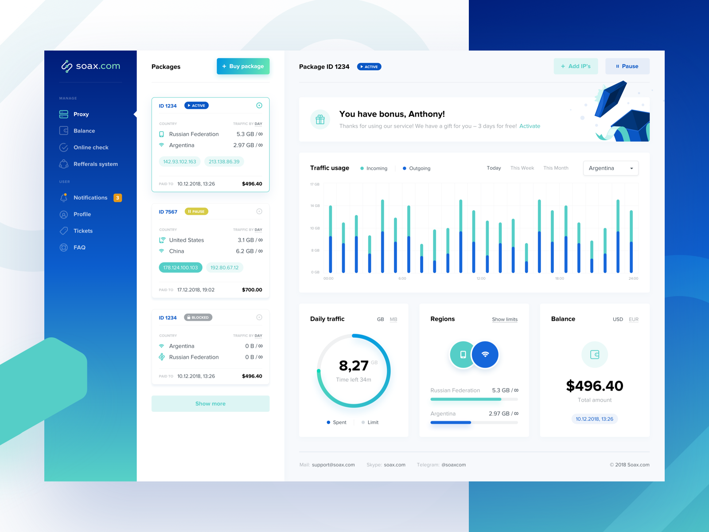
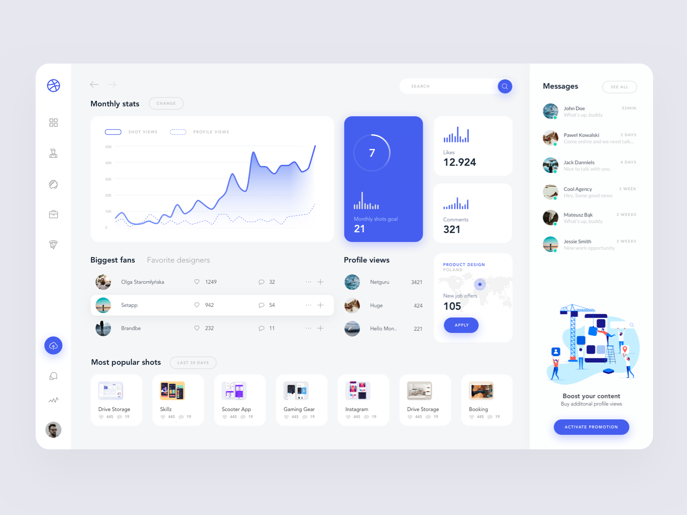
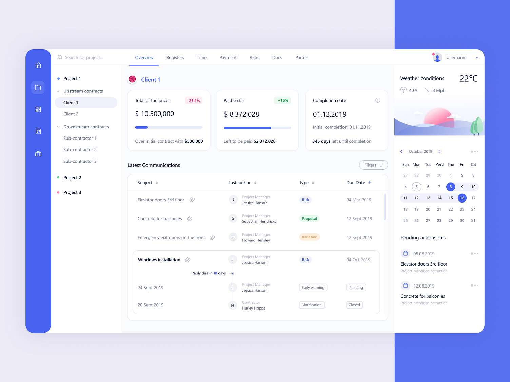
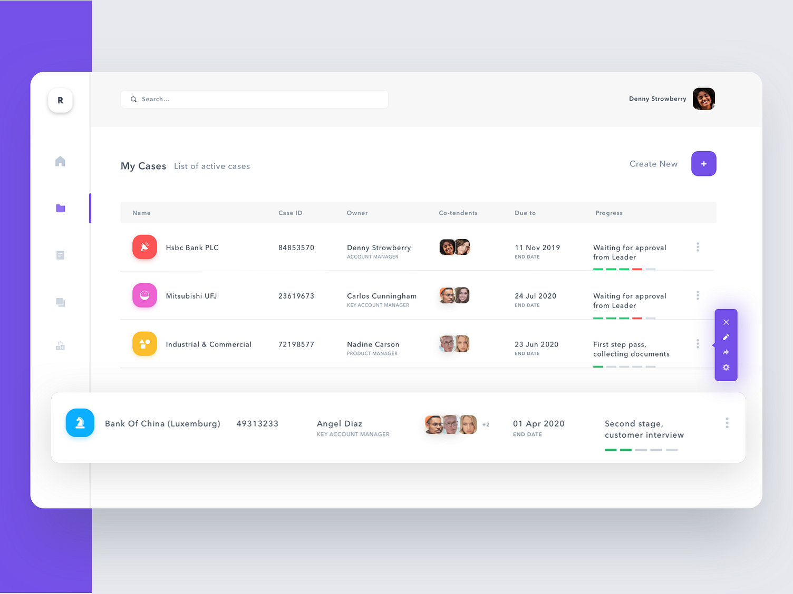

첫 메인페이지
About Me
Simple code, better experience.
안녕하세요.
사용자 경험을 정확하게 화면으로 구현하는 웹퍼블리셔 정재훈입니다.
시맨틱 마크업과 웹표준을 기반으로 반응형 웹을 제작하며, 다양한 디바이스와 브라우저 환경에서도 동일한 사용성을 제공하는 것을 목표로 합니다. 디자인 의도를 이해하고 협업을 통해 개발자와 디자이너 사이의 간극을 줄이는 역할을 합니다. 재사용성과 유지보수를 고려한 구조적인 코드 작성을 지향합니다. 작은 인터랙션과 디테일이 서비스의 완성도를 만든다고 믿습니다.
Works
보안백업 프로그램
React와 Electron 기반 데스크톱 애플리케이션의 UI 구현을 전담하며 화면 설계부터 컴포넌트 구조화, 스타일 시스템 구축까지 전반적인 프론트엔드 영역을 담당했습니다. 사용자 흐름을 고려한 인터랙션 설계와 반응형 레이아웃 적용으로 사용성을 개선했으며, 일관된 디자인 가이드와 재사용 가능한 컴포넌트를 구축해 UI 완성도와 유지보수 효율을 높였습니다.
- React(JSX)
- SCSS Modules

보안플랫폼
자사 솔루션의 관리자·사용자 페이지 전반의 UI 구현을 담당하며, 마크업 구조를 모듈화하여 화면 단위 컴포넌트의 재사용성을 높였습니다. 레이아웃 정리와 스타일 체계화를 통해 인터페이스 일관성을 개선하고, 사용자 동선과 가독성을 고려한 UI/UX 개선을 주도하여 운영 편의성과 사용성을 향상시켰습니다.
- HTML5
- CSS3
- Jquery
- Bootstrap

고객사 전용 UI
다양한 고객사 요구사항에 맞춰 자사 솔루션의 UI를 커스터마이징하고 화면 레이아웃 및 스타일을 조정하여 서비스 환경에 최적화된 인터페이스를 제공했습니다. 기능 변경에 따른 마크업 수정과 스타일 유지보수를 수행하며 기존 구조의 일관성을 유지하고, 안정적인 운영과 사용자 편의성 향상에 기여했습니다.
- HTML5
- CSS3
- Jquery
- Bootstrap

홈페이지
자사 홈페이지 전반의 UI 유지보수와 콘텐츠 업데이트를 담당하며 화면 구성과 마크업을 정리해 가독성과 사용성을 개선했습니다. 구조 분석을 기반으로 메타 태그, Open Graph, 시맨틱 태그를 적용해 검색 노출과 접근성을 향상시켰고, 정기 뉴스레터 운영을 통해 사용자 유입과 고객 소통 활성화에 기여했습니다.
- HTML5
- CSS3
- Jquery
- Bootstrap

Skills
-
01
UI
마크업 설계시맨틱 HTML 구조를 기반으로 정보 위계를 명확히 설계하고, 가독성과 유지보수를 고려한 마크업 체계를 구축합니다. 재사용 가능한 구조와 일관된 네이밍 규칙을 적용해 확장성과 안정성을 확보하며, 다양한 환경에서도 유연하게 대응 가능한 견고한 UI를 구현합니다.
-
02
반응형
웹 퍼블리싱다양한 해상도와 디바이스 환경을 고려해 유연한 레이아웃과 미디어쿼리를 적용하고, 화면 크기에 따라 자연스럽게 동작하는 반응형 UI를 구현합니다. 공통 스타일 가이드를 기반으로 일관된 사용자 경험을 제공하며, 접근성을 고려한 퍼블리싱 품질을 지향합니다.
-
03
크로스
브라우저 대응주요 브라우저 및 다양한 실행 환경에서의 테스트를 통해 레이아웃 이슈와 기능 오류를 사전에 점검하고 개선합니다. 브라우저 간 렌더링 차이를 고려한 코드 작성으로 호환성을 확보하며, 어떤 환경에서도 일관되고 안정적인 화면 표현을 구현합니다.
-
04
스타일 가이드
CSS 구조화SCSS를 기반으로 공통 변수와 믹스인, 네이밍 규칙을 정리해 일관된 스타일 가이드를 수립하고 구조화된 CSS 아키텍처를 구축합니다. 컴포넌트 단위로 스타일을 관리하여 재사용성과 확장성을 높이며, 협업 시 수정 범위를 명확히 해 유지보수 효율을 향상시킵니다.
-
05
협업 중심
퍼블리싱디자이너 및 개발자와의 긴밀한 커뮤니케이션을 기반으로 디자인 의도를 정확히 반영하고, 기능 구현과 연계를 고려한 구조적인 퍼블리싱을 수행합니다. 컴포넌트 단위의 마크업 설계와 명확한 코드 컨벤션을 통해 협업 효율을 높이며, 개발 과정에서 발생할 수 있는 이슈를 사전에 예방합니다.